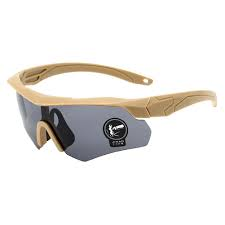

Os Óculos Táticos oferecem proteção ocular total contra impactos e raios UV. Leves e confortáveis, são perfeitos para atividades de tiro esportivo, airsoft e uso em ambientes exigentes.
Preço: R$ 55,90